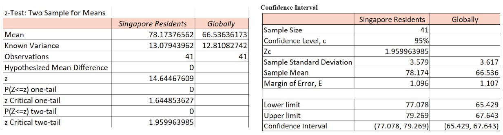

You are a group of innovative, creative and energetic young people (The “ICE” Team) who intend to use data-driven analyses to investigate social issues / support better living in the community. As a team, you are to pick a social topic or a current issue, conjecture a main hypothesis and a set of sub-hypotheses, which will be verified or disproven by the analysis. Team members are to verify or disprove 1 sub-hypothesis each, which will contribute to verify or disprove the team’s main hypothesis.
Chosen Hypothesis: Singapore is a good country to live in
Justify my sub-hypthesis: Singapore has the best healthcare
Firstly, we crafted survey questions about our sub-hypothesis and gathered 120 responses from various age groups.
I found secondary datasets that influenced my sub-hypothesis. Next, I found what a "good healthcare system" meant on the World Health Organisation (WHO) so that the users of my report can first understand what makes a good healthcare system.
I focused my research on 3 aspects: Affordability, Efficiency, and Life Expectancy.
Using my statistical research methods skills learnt, I used hypothesis testing(z-test), confidence interval and regression to analyse the datasets including my survey results.

After getting a conclusion from my analysis, I had to craft a report to explain my discovery. I found evidences that showed the relationship between the aspects I found and how it affects my sub-hypothesis.
For example, to explain why I've chosen life expectancy as an affecting factor. I found out that a good healthcare system will have more healthcare facilities, more highly skilled healthcare
workers that can treat patients more efficiently, and more up to date resources so that they can readily treat patients, regardless of the complexity of treatment, prolonging
their residents' life expectancy. And therefore, life expectancy was used as a measure of healthcare quality.
In conclusion, our statistical testing is able to support the claim that “Singapore has one of the Best Healthcare Systems in the World”. However, the claim that “Singapore has one of the Best Healthcare Systems in the World” could be false, as due to limited time and resources, the hypothesis testing was only done on two aspects that are influenced by the quality of healthcare: the life expectancy of a country’s population and the affordability of healthcare. If other aspects that determine the quality of healthcare like the clinical quality performance measures and patient experience and perceptions on healthcare were used to test the hypothesis too, the validity of our claim may be different. Furthermore, the hypothesis testing is flawed as the aspect of life expectancy can be affected by other factors such as food intake, physical activity level and stress level of individuals, just to list a few. Therefore, even though healthcare affects life expectancy, we cannot base the quality of healthcare on life expectancy alone
Hypothesis Conclusion:In conclusion, Singapore is considered one of the best countries to live in the world, but our statistical findings do not fully support this claim. While Singapore is known for its safety and good education and healthcare systems, there is limited evidence to support these claims. Our findings also show that there are fewer tertiary education holders in Singapore than the global average. The claim that "Singapore is a good country to live in" is subjective and depends on personal standards, but our analysis was based on factors such as education, healthcare, safety, low cost, and stress-free living. However, more statistical testing and data collection is needed to reach a true conclusion.
Report PDF